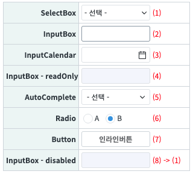
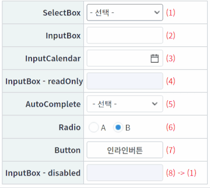
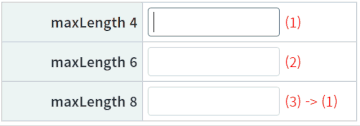
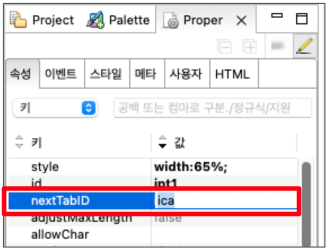
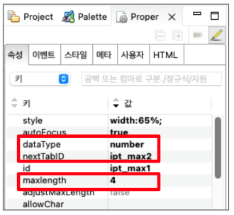

컴포넌트를 선택하고 "Tab"키를 눌렀을 때 이동하는 순서를 지정하는 예제입니다. 단, nextTabId가 설정된 컴포넌트가 readOnly나 disabled 옵션이 true로 설정된 경우 생략하고 다음 컴포넌트로 이동합니다. maxLength 옵션을 설정하면 입력한 자릿수 이상 입력했을 때 nextTabId로 설정된 컴포넌트로 이동합니다.
컴포넌트에 nextTabId를 설정해 Tab키를 눌렀을 때 순서를 지정한다.
maxLength를 설정해 자릿수를 채우면 다음 컴포넌트로 포커스를 이동한다.
STEP 1. 컴포넌트를 선택합니다.
SelectBox나 AutoComplete은 항목까지 선택합니다.
그림 1.브라우저(Chrome) 실행 예시

STEP 2. Tab 키를 눌러 순서대로 포커스가 이동하는 것을 확인합니다.
그림 2.브라우저(Chrome) 실행 예시

readOnly와 disabled가 설정된 컴포넌트를 제외하고 순서대로 진행되는 것을 확인합니다.
STEP 1. maxLength 입력 컴포넌트를 선택합니다.
STEP 2. 숫자를 입력해 자릿수가 넘어가면 이동하는 것을 확인합니다.
그림 3.브라우저(Chrome) 실행 예시

nextTabId: 컴포넌트를 선택한 상태에서 Tab키를 눌렀을 때 포커스를 이동할 컴포넌트의 ID
그림 4.컴포넌트 property 설정 - InputBox (2)

[소스 코드 예시]
<xf:input class="" id="ipt1" ... nextTabID="ica" ...></xf:input>
nextTabId="이동할 컴포넌트 ID"
dataType="nubmer"
maxLenght="최대 길이"
그림 5.maxLength 값 설정하기

[소스 코드 예시]
<xf:input ... maxlength="4" nextTabID="ipt_max2" dataType="number" ... > </xf:input>
nextTabID
maxlength
[웹스퀘어5 SP5 개발 가이드] 포커스 이동
링크 : https://docs1.inswave.com/sp5_user_guide/8df43d1f59fab704#a131cbc7f35e9859